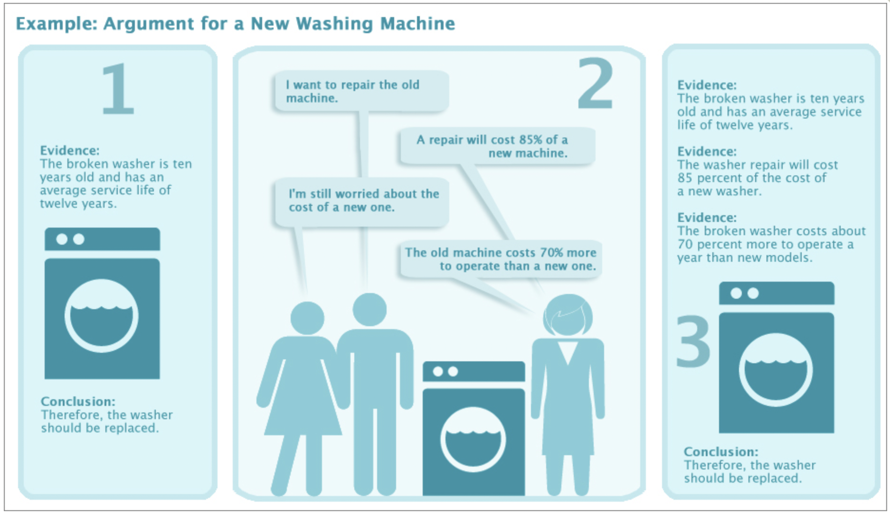

Primary and Secondary Audiences¶
Identify whether you have more than one audience.
Focus on the primary audience than on the secondary audience.
And as for purpose, don’t settle for “I want my words to work.” Visualize specifically what you want the words to do. Make the readers see something? Make them feel certain emotions? Perform certain actions? Change their minds?
—Peter Elbow
Daily communication might not require a lot of thought but it is always better to properly compose thoughts before communicating and can be more effective.
“Planning your communication—by analyzing the situation and organizing your message—often delivers better results than operating on instinct.”
Models and frameworks are used in various areas of business.
In short term, models are memorize and applied on a specific business usecase. Source of information can be textbook, cases, simulations and similar educational materials.
“Learming how to apply models can embed them in our memory.”
Sender needs to know precise purpose or intention of the message to be sent.
Sender need to understand the audience before the message is being sent and to fulfill the purpose.
“An effective communicator is a good learner.”
Knowledge gained with thinking about purpose and audience can enhance the message.
There is always to know more about the audience even if they work with us.
Question |
Purpose |
|---|---|
Why |
What is it that needs to accomplished by communication |
Who |
People with whom communication will be taking place |
How |
The content that needs to be communicated |
Checklist: Analyzing a Communication Situation
This question is used to identify the purpose of communication or the outcome that needs to achieved through communication.
In business, managers communicate to for the following reasons
To transfer information or to inform
To motivate the audience to change their opinion or to take actions.
“Informative communication - Communication that describes or explains some aspect of reality.”
This type of communication is generally used to name a method or process and explain the purpose or utility of the same.
“persuasion - The use of language to motivate an audience to think, feel, or act in the way the communicator intends.”
Persuasive Communication |
Purpose |
|---|---|
Conference call with stock market analysts |
Think: Motivate investors to think the company is a sound investment. |
CEO at an annual shareholders meeting |
Feel: Motivate shareholders to feel confidence in a new CEO. |
Video presentation to employees |
Act: Motivate employees to act in a specific way, such as to sign up for a fitness program. |
Presentation to CEO |
Think, feel, and act: Convince the CEO to think that the company’s strategy is flawed, to feel doubt about it, and to authorize a team to propose changes. |
Good communication is essential for influential leadership as it is the only way to succeed in the long term. Leader should be able to persuade and treat people as partners and collaborators.
Clients don’t want to be told what to do. They want choices, decision points and collaborators.
Persuasion is the language of business leadership. It is used to get work done and for achieving the desired outcomes with everyone.
Persuasion |
Catalyst for Work |
Outcome You Can’t Realize on Your Own |
|---|---|---|
Sales presentation |
Selling online video services |
Selling in the United States, Latin America, and Asia |
Persuasion should be used daily.
Persuasion ensures that people share the same goals and worked cooperatively.
Alternatives to persuasion, authoritarianism or anarchy, are sever drawbacks.
Persuasion usually don’t succeed on the first try.
Business persuasion is a process and not an event, requiring multiple communications and other influences. ” In the process, the initial purpose can change as audience members ask questions, raise objections, and put forward their own ideas.”
Persuasion can stimulate diverse viewpoints which has the capability to improve the end result.
Two questions to help define purpose:
Informative |
Persuasive |
|---|---|
What is the importance of the information? |
What is the importance of the topic? |
What specific information gap do I want to fill? |
What do I want the audience to think, feel, and do? |
Clarifying the purpose is essential for the communication.
Communication is all about the audience.
“Understanding your audience will help you achieve the purpose you have defined.”
Only the information which will be helpful for fulfilling the purpose is required about the audience.
“Before you start creating the content of a written or spoken message, take ten minutes to think only about your audience. Record the points that seem most worthwhile. As soon as you can, compare your perceptions of the audience with those of someone trustworthy who knows some or all of the audience members. The odds are very high that what you learn will affect what and how you communicate.”
“Apologies tend to placate people and make them receptive.”
To explore your audience, these questions are helpful:
Who is my audience?
What do my audience members know about the topic?
What is their attitude toward the topic? Do they have any biases related to the topic?
What is their attitude toward me?
What is my attitude toward the audience?
Identify whether you have more than one audience.
Focus on the primary audience than on the secondary audience.
Identify the barriers in order to remove them or the lessen their impact.
In business, there are many potential barriers to communication:
Hostility to the conclusion, the communicator, or both
Audience belief that the writer or speaker isn’t trustworthy
Lack of background knowledge in the writer-speaker or the audience
Bias in the speaker-writer or in the audience
Ethical and legal issues related to the topic
Power and other organizational issues, such as a speaker addressing an audience over whom he or she has no power but nevertheless seeks action from
Cultural factors such as different attitudes toward conflict in the presenter and the audience
Language issues, such as the inability of audience members to follow someone speaking too fast in their second language
Learn to be flexible with the communication styles across cusltures.
Some cultures place a high value on developing personal relationships as well as business relationships; others don’t. If not acknowledged, the difference can cause problems.
Cultures often have conflicting norms for punctuality. Even digital communication can be affected by the differences.
Gender roles can be influential, regardless of the communication medium. But digital media may make it less of an issue.
Age shouldn’t have a large impact on any type of digital communication.
Likes and dislikes in entertainment can cement relationships in any medium, but they shouldn’t be a major barrier in email and other digital media.
Desire for effifcient communication can be a high barrier if, for cultural reasons, one party expects concise messages and the other party writes longer messages with more context and some content not strictly related to business.
Humans are biased in their thinking.
Bias can affect communication in two ways:
Our own bias may influence message
Bias at the reception by audience
“ias has relevance for communication because it can lead to distorted views of a situation, tension between the communicator and the audience, and misunderstandings.”
Four biases which has significant impact on coomunication:
False generalization
Anchoring bias
Availability bias
Representativeness bias
“False generalization, also called the law of small numbers, means drawing a conclusion from a small set of data; the resulting conclusion is often wrong.”
“Arises from our need to believe that the world is orderly and consistent”
Considering a larger set of may help us avoid false generalization.
“Anchoring bias (or simply anchoring) is excessive reliance on one or a few values, particularly when judging, deciding, or acting. In other words, one or a few values have unjustified influence over judgment, decision making, or action.”
Anchoring bias can be avoided by setting setting appropriate and realistic reference points.
Examination of reference points and benchmarks is important of oneself and the target audience.
“bias is the tendency to base a judgment or decision on the ease with which a relevant fact or event can be recalled. Often recency plays a major role; it’s easier to recall an event that just happened than one that happened at an earlier time.”
“Base rate - The probability of something being determined by rational means, such as statistics.”
Availability biases can be dealt by building arguments around the base rates.
“Representativeness bias allows people to judge whether something belongs in a specific category according to characteristics that they believe represent members of the category.”
“To spur your awareness of representativeness bias, ask yourself whether a classification you have made reflects all the relevant factors. In persuasive forms of communication, concentrate on classifications vital to your argument.”
Number of options to communication have increased significantly and have increased the ability to collaborate, innovate and mentor over long distances thereby linking people across the organization.
A very little thought is given to the communication channel.
Think about the channel before communicating.
Here are questions that can assist you in selecting a channel:
Which channel is best for my purpose?
Which channel is best for my audience?
Which channel is best for conveying information or making an argument?
Which channel is best for making an emotional impact on my audience?
Which channel is best for me?
Reasoning is always reliable in business. Irrational thinking will always be disastrous for any busniess.
“Reason is the most fundamental tool for creating business communication. Workplace audiences expect the content of presentations, memos, emails, and other forms of communication to be well reasoned and logical.”
Reason is used to select the information of greatest value for the audience. Omission of non-relevant information is the hardest part.
We cannot use all the informtion that is available in ones lifetime.
More information may not always help audience to be better informed. It may lead to confusion, tireness and unreceptiveness.
Information to be communicated should always be selected based on the principle of need to rather than nice to know.
“reason is used in informative communication to build a logical organization that helps the audience understand the content.”
“Communicating information that the audience won’t remember is pointless.”
Using reason in an informative message primarily has to do with selecting and ordering information by answering two questions:
What information does the audience need to know to fulfill my purpose?
What is the most logical way of presenting the information?
Business audiences expect persuasion to be rational rather than emotional.
Persuasion is a skillful activity.
” Argument is reaching a conclusion by using evidence. Evidence comprises qualitative and quantitative facts, calculations, inferences, theoretical knowledge, personal experience, and expert opinion.” 
“A concise evidence statement, combined with the conclusion, can be an excellent opening for a presentation or a written communication.”
“Induction is the process of concluding that something is probably true based on relevant observations. Deduction is the process of concluding that something is probably true by reference to a principle that is generally accepted as true.”
Induction and deductions both cannot be used directly for real-world arguments.
“Deductive logic, however, is based on a concept of great value for real-world reasoning. Deduction works because a generally accepted principle justifies related statements. In deduction, the generally accepted principle is called a major premise or an assumption.”
“The assumption makes the conclusion possible by connecting the evidence and the conclusion.”
To check assumption of an argument -
What to do |
How to do to |
|---|---|
Define the assumption. |
Determine the logical link between the evidence and conclusion. |
Evaluate the assumption’s acceptability to the audience. |
Decide whether the intended audience will believe the assumption. |
Use the argument or change it. |
If the assumption is acceptable, use the argument. If the assumption is not acceptable, change the argument. |
“Judging the acceptability of assumptions depends on the audience and all the variables that affect it, such as culture, values, history, bias, and knowledge.” Hence know your audience.
Assumptions should be acceptable to the audience.
The following questions are useful for constructing an argument:
What arguments can I make to achieve my purpose?
What evidence do I have or need to support the arguments?
What assumptions am I making? Are they acceptable to the audience?
Emotion influences our every thought and action.
“Emotion is generally not an essential factor in informative communication, but it matters a great deal in persuasion. Emotion influences how an audience reacts to a communication. It also influences how writers and speakers express themselves in their messages.”
Consider these three questions:
How do audience members feel about my topic?
What audience feelings can help me achieve my purpose?
How can I elicit these feelings?
“Business audiences can fool themselves into thinking that they’re immune to feelings affecting their judgment. Emotions are real and are part of how we make our judgments and decisions even though we aren’t conscious of some of them.”
“Practically, then, you are better off having the audience’s emotions work for you. Emotions energize persuasion and can have a multiplier effect on a message.”
“Character is the audience’s attitude toward a speaker or writer.”
“Audiences form attitudes of the person communicating not only from the content of the message but also from other sources such as body language and facial expression (speakers), tone and vocabulary (writers), and the audience’s previous impressions of the person (both writers and speakers).”
Audience put more emphasis on the communicator’s knowledge and credibility.
Persuasion works more if consistency is maintained over a time span.
Fallicious character is difficult to construct. Never create one.
“The risk of trying to express false character is that the audience will detect it, at which point the persuader’s credibility evaporates.”
Instead, stress different aspects of our character to suit our purpose.
When you are considering what ethos you want to convey, ask these questions:
What is the audience’s attitude toward my character?
What do I want the audience members’ attitude to be?
How can I move the audience to adopt the desired attitude?
Misuses of persuasion: fudging of data, manipulation of feelings, projection of a false character.
Persuasion is not deception of emotion.
Persuasion is an art to get things done.
“Persuasion is sensitive to the ethics of both sides of a communication. The point is that both communicators and audiences have ethical responsibilities.”
“Everyone has opportunities to exploit communication for the sake of some kind of perceived advantage. When in doubt, ask yourself what outcome is best for you and the common good in the long as well as the short run.”
The meesage of the communication is completely dependent over the situation. Situation determines the creation and organization of content.
To create an informative message, gather the information necessary to accomplish your purpose. You also need to understand the information. If you do not understand some or all of the information, take whatever action you need to master it.
The guiding principle for informative communication is to include everything the audience needs to know and no more. Limiting information to the essentials sounds straightforward, but there is a strong tendency to think that more information is better than less.
Order the content should be created by focusing on the comprehension ability of the audience.
Order of content should not be left to the audience.
There are two broad categories of organizers:
Organic organizers
Analytic organizers
“Organic organizers are those that derive from the nature of the topic.”
Most common types of organic logics:
Organic Organizer |
Definition |
Example |
|---|---|---|
Physical arrangement |
Arrangement of physical details. |
Describe the organization of a production line and explain why it is organized that way. |
Chronology |
Time sequence |
Describe the history of a product line and explain decisions that shaped its history. |
Process |
Series of steps that lead to a specific outcome. |
Describe the steps for entering information into a computer database and explain the rationale for the order of the steps. |
Hierarchy |
Structure of authority, power, responsibility, or similar characteristics of an organization. |
Describe an organization chart and explain the reporting relationships. |
Analytic organizer are those who organizes information using concepts appropriate to the content and the audience.
“A frequently used analytic organizer is order of importance. A to-do list arranged from the most important task to the least important is an example. So is a set of recommendations for improving an employee’s performance arranged in priority order. Another common type of analytic organizer is level of difficulty (basic to advanced) and frequency (high frequency to low frequency).”
“Business concepts often serve as analytic organizers.”
Examples of analytical organization
Analytical Organizer |
Definition |
Example |
|---|---|---|
Importance |
Arrange by value, worth, and urgency. |
List of critical safety practices (most important to least important). |
Difficulty |
Arrange by level of difficulty. |
Training manual for operation of machine (basic to advanced). |
Frequency |
Arrange by the number of occurrences over a period of time. |
Number of mentions of company in various social media (high to low frequency). |
Business concepts |
Arrange by order of concepts in a business model. |
A marketing plan organized around the 4Ps. |
Persuasion rests on the foundation of well-defined purpose and a sound understanding of the audience.
“The goal of informative communication is to obtain audience comprehension of the content. In contrast, persuasive communication seeks to motivate an audience to think, feel, or do something specific.”
In informative communication, just the necessary facts are provided. But in persuasion, apart from the provision of facts, it is also necessary to communicate the necessity to act, feel and think over those facts in a certain way.
“Persuasive business communication uses different combinations of rational arguments and emotional and character-based appeals.”
“Management communication depends heavily on rational arguments for a variety of reasons, the most important of which is audience expectations. Therefore, as future managers and leaders, you need to know how to build arguments.”
Three important types of arguments in business:
Decision
Evaluation
Diagnosis
Decision is driving force in every business. There are two factors which influence the decision: criteria and evidence.
“When you apply the criteria, you have to show the audience strong evidence that clearly supports your recommended decision.”
Decision Argument Template
“The keys to an evaluation are using an appropriate set of criteria, fully applying them to the subject of the evaluation, and making a reasonable evaluation based on the results.”
Evaluation Argument Template
Many business situations need diagnosis.
“A diagnostic argument is explanatory. It is needed when a situation or outcome needs a causal explanation”
Diagnosis Argument Template
“To make an accurate diagnosis, use concepts and knowledge relevant to the problem, along with experience and common sense.”
Note
All the templates and supporting material is available on github.